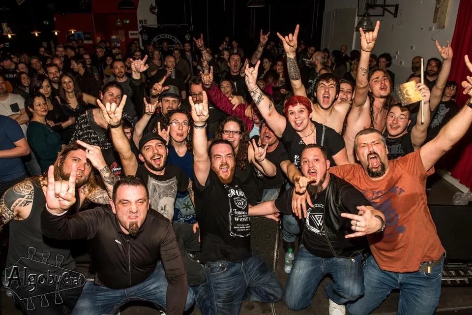
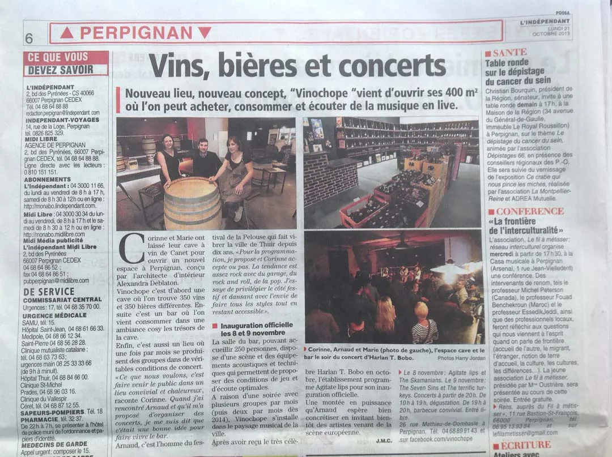
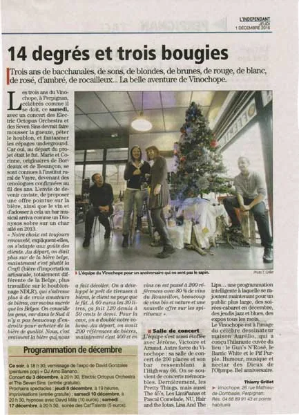

Depuis 2013
Deux œnologues,
un hangar et
beaucoup de bruit.
L'histoire de Vinochope, racontée par celles et ceux qui l'ont faite, et par la presse qui l'a suivie.

2007
Deux amies, un diplôme en poche.
Corinne Magne et Marie Pieu se rencontrent sur les bancs d'une école d'œnologie, près de Bordeaux. L'une vient de Bordeaux, l'autre de Besançon. Elles en sortent œnologues, avec la même envie : faire découvrir le vin autrement.
En 2007, Corinne pose ses valises en pays catalan. Elle travaille d'abord dans une cave de Banyuls, puis au Comptoir des crus, et retrouve Marie, installée elle aussi dans la région.
2009
Une première cave à Canet.
Corinne reprend une cave à vins à Canet Sud. Pendant trois ans, elle y apprend le métier de caviste : choisir, goûter, conseiller. En 2012, elle la cède. Avec Marie, elles ont un projet plus grand en tête.
2013
Un hangar vide, tout à faire.
Rue Mathieu de Dombasle, elles trouvent un immense hangar. Il n'y a rien, et c'est exactement ce qu'il leur faut. L'architecte d'intérieur Alexandra Deblaton dessine les 400 m² : une cave, un bar, et une vraie salle de concert pour 200 à 250 personnes, avec une scène et une acoustique pensées pour les musiciens.
Vinochope ouvre le 2 septembre 2013. Au départ : 350 vins, 350 bières, et une idée simple, venir acheter une bouteille, la boire sur place, et écouter de la musique live.
Arnaud Pinchon, guitariste et homme de festivals, prend la programmation. Le rock, le swing et la soul entrent dans la cave.
L'inauguration officielle a lieu les 8 et 9 novembre, avec quatre groupes sur scène.

2014
Le pari tient bon.
Un an plus tard, le concept a trouvé son public. Les apéros-concerts du jeudi se remplissent, les gros concerts du samedi affichent complet. Pour le premier anniversaire, des groupes venus de Londres font trembler les tonneaux.
2015
Le Vino Wild Week End.
Les 29, 30 et 31 mai, Vinochope lance son propre festival : trois soirs de concerts, avec en tête d'affiche les légendaires Fleshtones de New York. La cave compte alors plus de 600 références de vins, de bières et de spiritueux.
2016
Trois bougies et des légendes.
Le 19 novembre, The Pretty Things, pionniers du rock anglais des années soixante, jouent sur la scène de la rue Mathieu de Dombasle. Quelques jours plus tard, France Bleu consacre une émission à Vinochope.
Pour ses trois ans, la cave a pris un virage : la bière craft prend toute sa place à côté des vins, toujours à huit sur dix du Roussillon. La location de tireuses se développe pour les fêtes de toute la région.

Saison
après
saison
Bien plus qu'un bar.
Les Limiñanas, Pascal Comelade, Tony Truant, Jango Edwards, l'humoriste Denis Maréchal, le guitariste Steeve Laffont : la liste des artistes passés par la cave ne cesse de s'allonger.
Entre deux concerts, les murs accueillent des expositions de dessinateurs et de peintres, la salle se transforme en cinéma pour des nuits du court-métrage, en marché d'artistes, en piste de danse pour un festival des années cinquante.
Aujourd'hui
La suite s'écrit avec vous.
Deux cents vins, quatre cent cinquante bières dont deux cents craft, cent cinquante spiritueux, une programmation renouvelée chaque trimestre et des tireuses qui partent chaque week-end. L'esprit n'a pas changé : on vient pour un verre, on reste pour la musique.
La revue de presse
Ils en ont parlé.
Une sélection d'articles parus depuis l'ouverture. Cliquez sur une coupure pour la lire en grand.
Et à la radio : France Bleu Roussillon a consacré une émission à Vinochope le 2 décembre 2016.